ЯРУС 01
ВЪЕЗД · ПРИЁМНАЯ
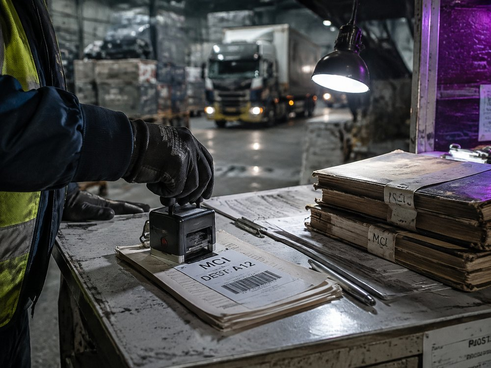
Транзит
Через верхние въездные ярусы Бастиона проходит основной поток ресурсов, техники и живой силы, поступающих в домен «Прах». Сюда свозятся металлы, трофейное вооружение, промышленные узлы и принудительно изъятые люди, после чего всё распределяется по внутренним секторам комплекса.
Снабжение Ракшасов превращено в централизованный механизм учёта и жёсткого перераспределения. Для Бастиона этот уровень служит главным приёмным узлом, через который крепость поглощает ресурсы всей Азии.
Снабжение Ракшасов превращено в централизованный механизм учёта и жёсткого перераспределения. Для Бастиона этот уровень служит главным приёмным узлом, через который крепость поглощает ресурсы всей Азии.

Приёмная процедура
Прибывающие проходят досмотр, санитарную обработку и первичную сортировку. Документы и личные вещи изымаются, сведения заносятся в реестр, после чего человеку присваивают номер, категорию допуска и сектор назначения.
Свободный персонал направляют в служебные блоки, принудительную рабочую силу — в жилые и производственные ярусы. Решение считается окончательным с момента регистрации; прежний статус, происхождение и семейные связи внутри Бастиона значения не имеют.
Свободный персонал направляют в служебные блоки, принудительную рабочую силу — в жилые и производственные ярусы. Решение считается окончательным с момента регистрации; прежний статус, происхождение и семейные связи внутри Бастиона значения не имеют.
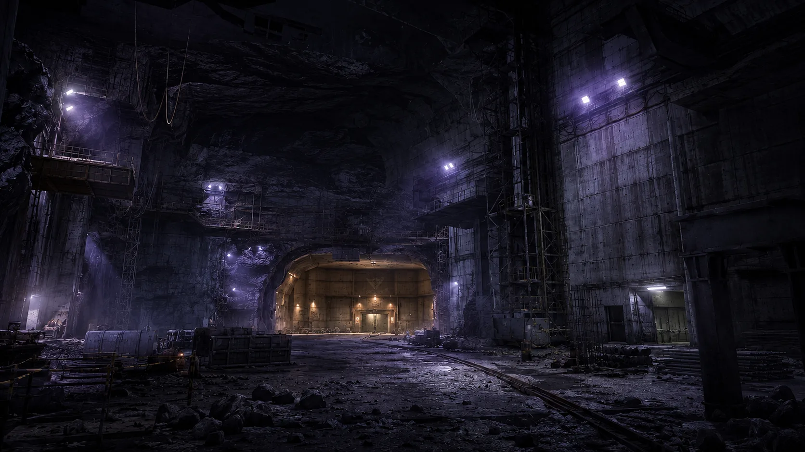
Доковый отсек
Доковый отсек
За действующими терминалами продолжается строительство новых приёмных линий. Проходческие машины расширяют полость, монтажные бригады прокладывают рельсы, вентиляцию и грузовые подъёмники, пока соседние доки уже принимают очередные колонны.
Бастион растёт без остановки: новые мощности вводятся по частям, иногда ещё до завершения отделки и испытаний.
Бастион растёт без остановки: новые мощности вводятся по частям, иногда ещё до завершения отделки и испытаний.
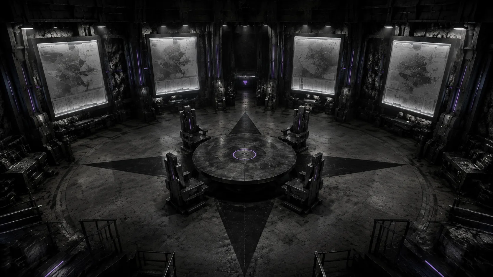
ЯРУС 02
ЗАЛ СОВЕЩАНИЙ

Квартет
Квартет Ракшасов возник в 2024 году как союз Амели Бертран, Валентины Блажек, Дариана Сореля и Эмиля Гранта. Объединение, созданное ради выживания во время зачистки Европы, позднее стало высшим уровнем управления захваченными территориями Азии.
Каждый из четырёх сохраняет собственный домен, силы и внутренний порядок. Амели Бертран редко выступает публичным лидером Квартета, однако контролирует его важнейшую опору: Бастион, защищённые убежища, часть общей логистики и инфраструктуру, от которой зависят остальные участники. Её влияние строится на доступе, ресурсах и способности обеспечить Квартету выживание — либо лишить его этой гарантии.
Каждый из четырёх сохраняет собственный домен, силы и внутренний порядок. Амели Бертран редко выступает публичным лидером Квартета, однако контролирует его важнейшую опору: Бастион, защищённые убежища, часть общей логистики и инфраструктуру, от которой зависят остальные участники. Её влияние строится на доступе, ресурсах и способности обеспечить Квартету выживание — либо лишить его этой гарантии.

Домен «Прах»
Владения Амели охватывают Тибет, Непал, Бутан и прилегающие горные районы. Узловой столицей служит Бастион — центр управления, снабжения и перераспределения ресурсов, стянутых сюда со всей Азии.
«Прах» — самый малонаселённый из доменов Ракшасов и единственный, где поддерживается строгий централизованный порядок. Пронумерованные Координаторы управляют логистикой, рабочей силой и зачисткой территорий по единым протоколам Амели. Даже удалённые поселения и руины здесь постепенно превращаются в части одной системы, замкнутой на Бастион.
«Прах» — самый малонаселённый из доменов Ракшасов и единственный, где поддерживается строгий централизованный порядок. Пронумерованные Координаторы управляют логистикой, рабочей силой и зачисткой территорий по единым протоколам Амели. Даже удалённые поселения и руины здесь постепенно превращаются в части одной системы, замкнутой на Бастион.
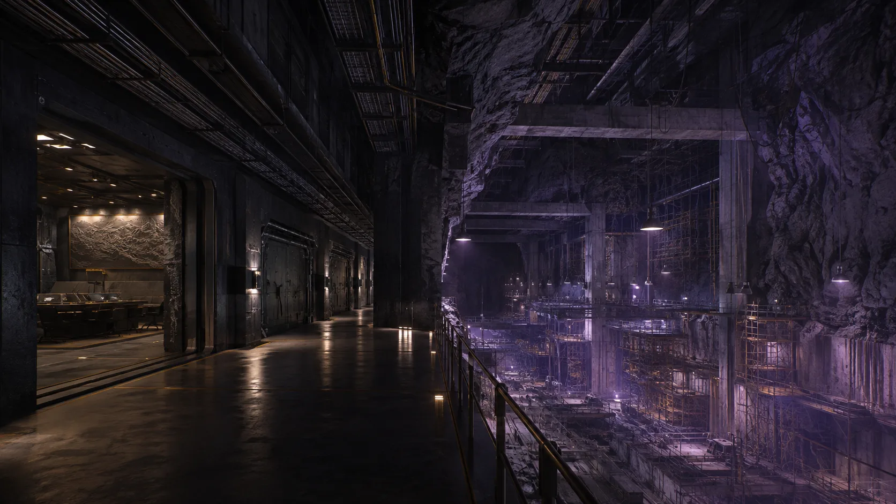
Командное крыло
Командное крыло
За действующим залом совещаний строится новый комплекс защищённых кабинетов, архивов и узлов связи. Часть помещений уже используется, пока соседние секции остаются открытыми шахтами, сырыми тоннелями и монтажными площадками.
Расширение продолжается вокруг работающего центра Квартета, поэтому граница между командованием и стройкой здесь почти отсутствует.
Расширение продолжается вокруг работающего центра Квартета, поэтому граница между командованием и стройкой здесь почти отсутствует.

ЯРУС 03
ЖИЛОЙ БЛОК

Координаторы
Координаторы — пронумерованный административный и обслуживающий корпус Бастиона. Они ведут учёт, распределяют ресурсы и рабочую силу, контролируют маршруты, жилые секции и исполнение внутренних протоколов. Личных имён в системе нет: каждый обозначается номером, должностью и зоной ответственности.
Для Амели Координаторы служат продолжением её собственной потребности в порядке. Через них единые правила распространяются за пределы Бастиона — на логистические узлы, поселения и очищаемые территории домена. Их система устраняет случайность настолько, насколько это вообще возможно.
Для Амели Координаторы служат продолжением её собственной потребности в порядке. Через них единые правила распространяются за пределы Бастиона — на логистические узлы, поселения и очищаемые территории домена. Их система устраняет случайность настолько, насколько это вообще возможно.

Предел допуска
В Бастионе ошибка редко остаётся техническим нарушением. Неровный шов, смещённая плитка или предмет, оставленный не на своём месте, способны вызвать у Амели приступ ярости, несоразмерный любым последствиям проступка.
В такие моменты протоколы перестают защищать персонал. Наказание определяется её состоянием: от немедленного исчезновения виновного до зачистки всей смены, сектора или цепочки ответственных. Поэтому в Бастионе боятся не самой ошибки, а того, что именно она увидит в ней сегодня.
В такие моменты протоколы перестают защищать персонал. Наказание определяется её состоянием: от немедленного исчезновения виновного до зачистки всей смены, сектора или цепочки ответственных. Поэтому в Бастионе боятся не самой ошибки, а того, что именно она увидит в ней сегодня.

Инцидент 3-1147
Во время осмотра жилого сектора Амели обнаружила напольную плиту, смещённую относительно оси коридора на четыре миллиметра. Ответственный Координатор попытался объяснить отклонение деформацией основания, после чего Амели потребовала вскрыть весь участок покрытия.
Работы остановили на девять часов. Плиты демонтировали на протяжении сорока двух метров; строительную смену и двух инспекторов передали в тюремный сектор. Запись была внесена в журнал как инцидент 3-1147: нарушение геометрии поверхности.
Сходных инцидентов на жилых ярусах за отчётный год: 68.
Работы остановили на девять часов. Плиты демонтировали на протяжении сорока двух метров; строительную смену и двух инспекторов передали в тюремный сектор. Запись была внесена в журнал как инцидент 3-1147: нарушение геометрии поверхности.
Сходных инцидентов на жилых ярусах за отчётный год: 68.
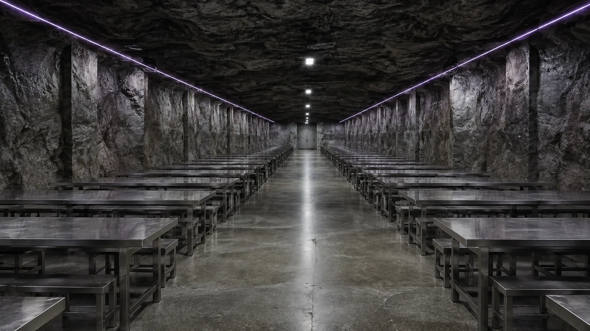
Столовая
Столовая
Питание проходит по сменам и строго закреплённым маршрутам. Места, время приёма пищи и объём пайка определяются номером, должностью и сектором допуска.
Разговоры разрешены только в установленные часы. Любое отклонение фиксируется как нарушение внутреннего режима.
Разговоры разрешены только в установленные часы. Любое отклонение фиксируется как нарушение внутреннего режима.
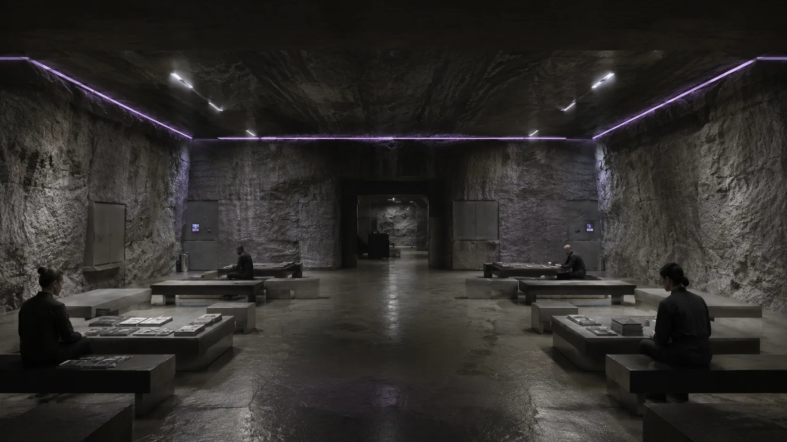
Зона отдыха
Зона отдыха
Доступ предоставляется по графику и только в пределах назначенного сектора. Помещения оборудованы местами для чтения, настольных игр и кратковременного отдыха между сменами.
Продолжительность посещения фиксируется автоматически. Уединение не предусмотрено: за порядком наблюдают дежурные Координаторы.
Продолжительность посещения фиксируется автоматически. Уединение не предусмотрено: за порядком наблюдают дежурные Координаторы.
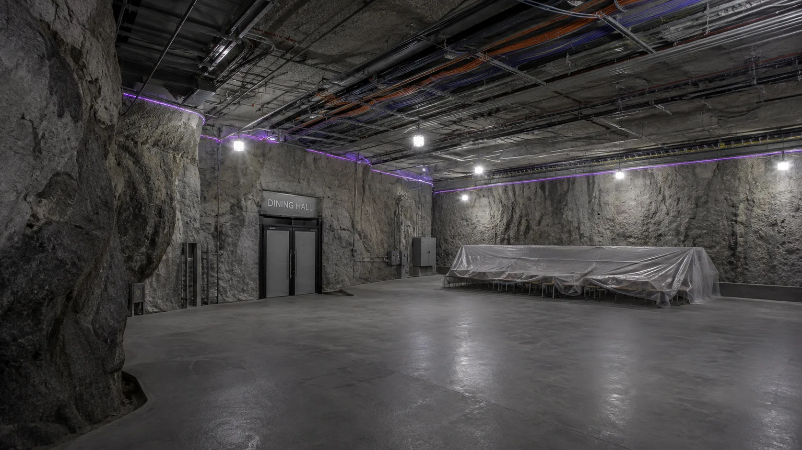
участок в разработке
Столовая (строится)

ЯРУС 04
СКЛАД
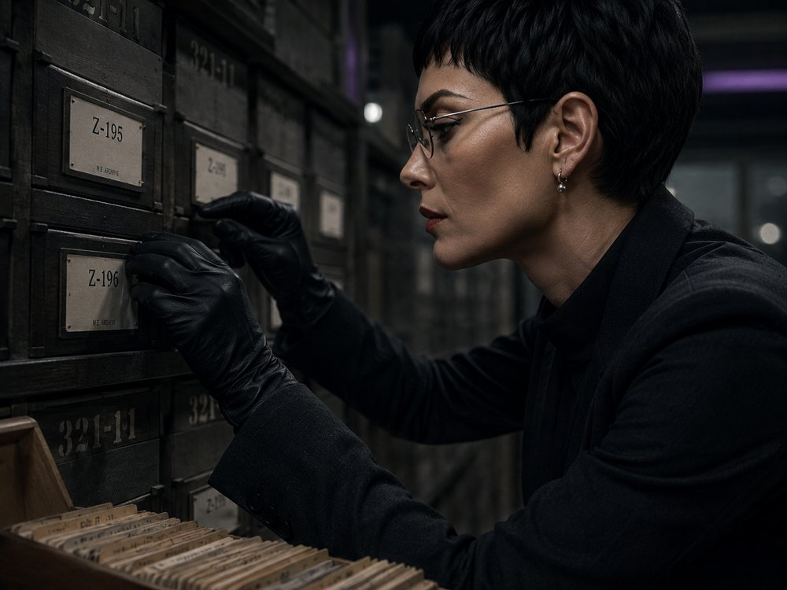
Каталог
Каждый предмет, поступающий на склады Бастиона, получает номер, категорию, источник и назначение. Партии разделяются по состоянию, ценности и допустимому сроку хранения; любое перемещение фиксируется Координаторами.
Неучтённых объектов в системе быть не должно. Повреждённое, бесполезное или утратившее маркировку имущество изымается до выяснения происхождения — вместе с ответственным за сектор.
Неучтённых объектов в системе быть не должно. Повреждённое, бесполезное или утратившее маркировку имущество изымается до выяснения происхождения — вместе с ответственным за сектор.
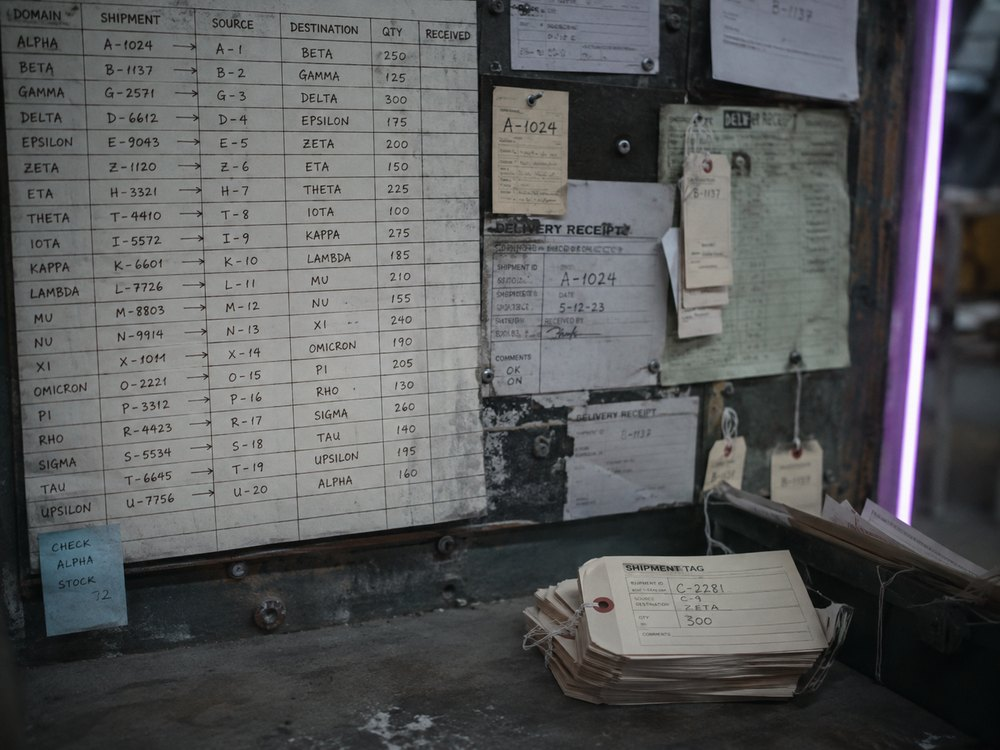
Механизм
Домен «Прах» работает как единый механизм выкачивания ресурсов. Металлы, оборудование, кабели, медицинские запасы и рабочая сила стягиваются к Бастиону через сеть Координаторов и промежуточных узлов.
Склады служат буфером этой системы: поступившее сортируют, учитывают и немедленно направляют на строительство, производство или обслуживание комплекса.
Склады служат буфером этой системы: поступившее сортируют, учитывают и немедленно направляют на строительство, производство или обслуживание комплекса.

Заполнение
Основу запасов составляют металлы, строительные материалы, промышленное оборудование, медицинские ресурсы и трофейная техника Forge. Отдельные секции отведены под оружие, архивы, редкие компоненты и имущество, изъятое с захваченных территорий.
Большая часть поступившего не хранится долго: после сортировки грузы направляют на стройку, в производственные ярусы или на обслуживание Бастиона.
Большая часть поступившего не хранится долго: после сортировки грузы направляют на стройку, в производственные ярусы или на обслуживание Бастиона.

Фабрика
Фабрика
Производственные линии Бастиона перерабатывают металлы, строительный лом, трофейное оборудование и органическое сырьё, поступающее из внутренних секторов. Комплекс выпускает стандартные элементы укреплений, трубы, крепёж, кабельные оболочки, детали вентиляции и расходные компоненты для дальнейшего расширения крепости.
Работа ведётся непрерывными сменами. Большинство операций выполняет принудительная рабочая сила; травмы, истощение и смертность учитываются как производственные потери. Неспособные продолжать работу переводятся в категорию биологического сырья и направляются на нижние ярусы.
Фабрика проектировалась как замкнутый цикл: Бастион использует привезённые ресурсы, изношенное оборудование и собственное население, сокращая объём отходов до минимума.
Работа ведётся непрерывными сменами. Большинство операций выполняет принудительная рабочая сила; травмы, истощение и смертность учитываются как производственные потери. Неспособные продолжать работу переводятся в категорию биологического сырья и направляются на нижние ярусы.
Фабрика проектировалась как замкнутый цикл: Бастион использует привезённые ресурсы, изношенное оборудование и собственное население, сокращая объём отходов до минимума.

ЯРУС 05
ТЮРЬМА

Категории
Заключённые Бастиона распределяются по пяти категориям в зависимости от текущей пригодности и дальнейшего назначения.
Категория I — временно задержанные, ожидающие проверки.
Категория II — пригодные к труду.
Категория III — ограниченно пригодные.
Категория IV — непригодные к дальнейшему использованию.
Категория V — подлежащие немедленной утилизации.
Перевод между категориями производится после осмотра, дисциплинарного нарушения, травмы или снижения производительности. Личное дело сохраняет только номер, категорию и предписанный маршрут.
Категория I — временно задержанные, ожидающие проверки.
Категория II — пригодные к труду.
Категория III — ограниченно пригодные.
Категория IV — непригодные к дальнейшему использованию.
Категория V — подлежащие немедленной утилизации.
Перевод между категориями производится после осмотра, дисциплинарного нарушения, травмы или снижения производительности. Личное дело сохраняет только номер, категорию и предписанный маршрут.
Последний маршрут
Заключённые IV и V категорий не содержатся в тюрьме постоянно. После подтверждения статуса их переводят ниже — в производственные сектора, на тяжёлые работы или непосредственно в биореакторный комплекс.
Маршрут проходит через изолированные транспортные коридоры и не пересекается с жилыми ярусами. Возврат из нижних секторов протоколами не предусмотрен.
Маршрут проходит через изолированные транспортные коридоры и не пересекается с жилыми ярусами. Возврат из нижних секторов протоколами не предусмотрен.
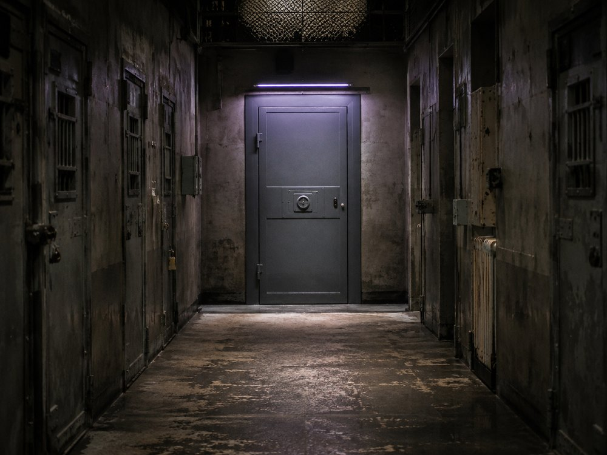
Сняты с учёта
После отправки по нижнему маршруту личное дело закрывается, а номер переводится в архив. Причина выбытия в общих реестрах не указывается: достаточно отметки о завершении процедуры.
Освободившееся место в камере, рабочей смене и учётной системе передаётся следующему заключённому. Через несколько дней от человека остаётся только архивная запись, недоступная большинству персонала.
Освободившееся место в камере, рабочей смене и учётной системе передаётся следующему заключённому. Через несколько дней от человека остаётся только архивная запись, недоступная большинству персонала.
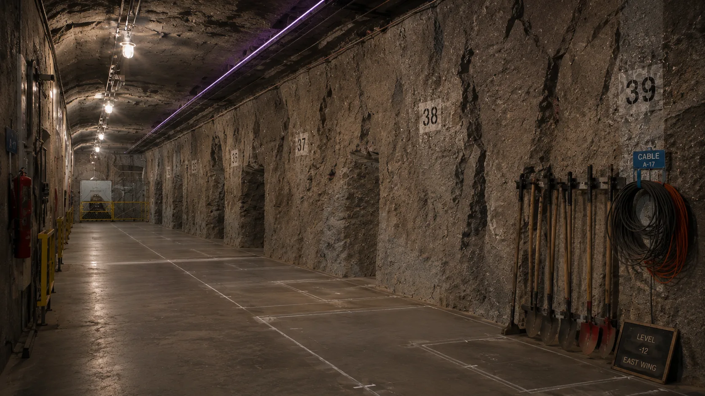
Строящийся блок
Строящийся блок
Расширение тюрьмы ведётся непрерывно. Новые камеры вводят в эксплуатацию по секциям: часть коридоров уже заполняется заключёнными, пока в соседних ещё продолжаются монтаж вентиляции, освещения и запорных систем.
Номера наносятся заранее. Проектная вместимость всегда рассчитывается с резервом под следующий поток, однако этот резерв обычно заканчивается раньше завершения очередного блока.
Номера наносятся заранее. Проектная вместимость всегда рассчитывается с резервом под следующий поток, однако этот резерв обычно заканчивается раньше завершения очередного блока.
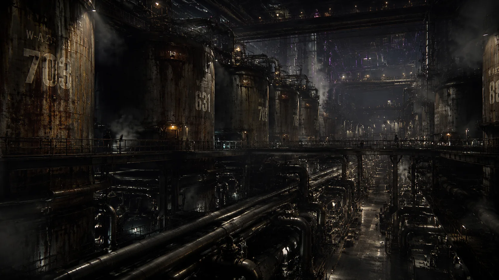
ЯРУС 06
БИОРЕАКТОР
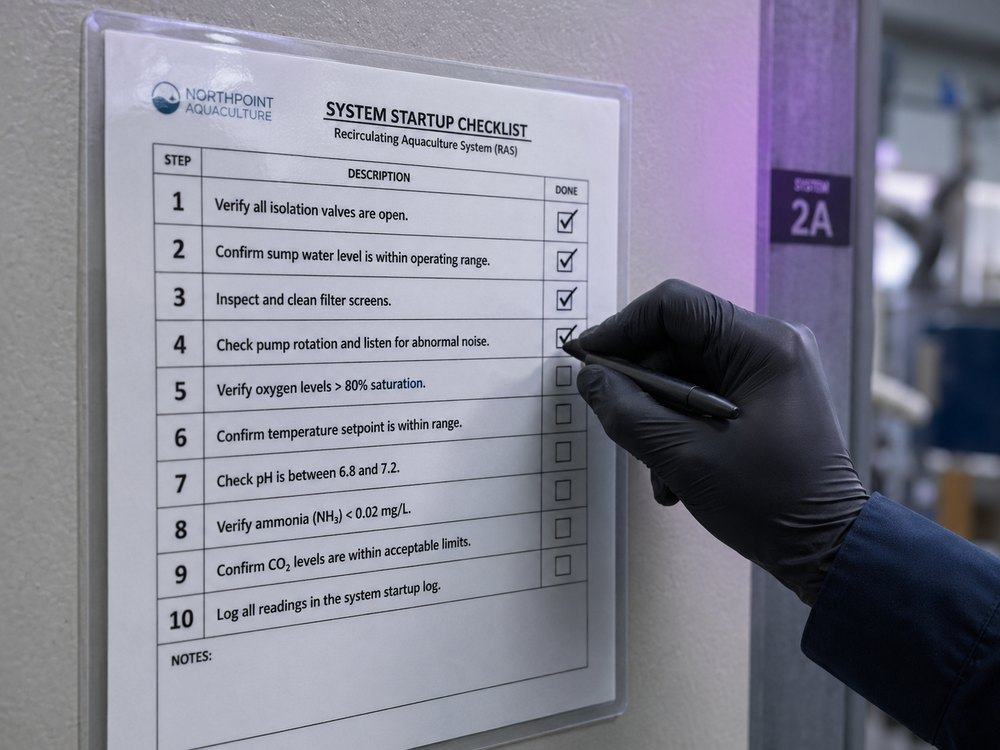
Биореакторный комплекс
Биореакторный комплекс Бастиона предназначен для промышленной переработки органического сырья. В герметичных установках биомасса разлагается с получением горючего газа, технических жидкостей, удобрений и тепловой энергии, используемой внутренними системами.
Основной поток составляют отходы производства, пищевые остатки, погибший скот и тела заключённых, снятых с учёта. При максимальной загрузке комплекс работает непрерывно и принимает новые партии по нижнему транспортному маршруту.
В системе Амели биореакторы выполняют две функции: уменьшают зависимость Бастиона от внешних поставок и обеспечивают окончательную утилизацию людей, признанных непригодными. Для неё это часть жизненного цикла.
Основной поток составляют отходы производства, пищевые остатки, погибший скот и тела заключённых, снятых с учёта. При максимальной загрузке комплекс работает непрерывно и принимает новые партии по нижнему транспортному маршруту.
В системе Амели биореакторы выполняют две функции: уменьшают зависимость Бастиона от внешних поставок и обеспечивают окончательную утилизацию людей, признанных непригодными. Для неё это часть жизненного цикла.

Выход
Продукты переработки не маркируются по происхождению. Газ поступает в энергетическую систему, тепло — в отопительный контур, жидкие фракции — в техническое производство, твёрдый остаток — в удобрения и строительные смеси.
Через несколько часов после загрузки человек окончательно перестаёт существовать. Полученные из него вещества распределяются по десяткам систем Бастиона и продолжают циркулировать внутри крепости.
Через несколько часов после загрузки человек окончательно перестаёт существовать. Полученные из него вещества распределяются по десяткам систем Бастиона и продолжают циркулировать внутри крепости.
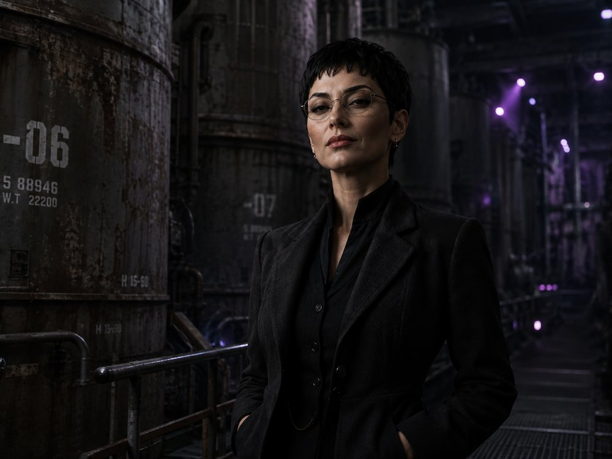
Тишина
Иногда Координаторы выбирают заключённых для однодневной службы в личных помещениях Амели. Им выдают чистую одежду и обещают освобождение, если хозяйка останется довольна.
Избранные стараются выполнять каждое поручение безупречно. К вечеру многие уже уверены, что заслужили свободу: Амели может холодно поблагодарить их и даже распорядиться вернуть личные вещи.
После этого человека сопровождают на биореакторный ярус. Он понимает назначение последней двери только тогда, когда за спиной закрывается шлюз. Амели предпочитает такой порядок: довольная прислуга работает тише, не портит день страхом и до последней минуты сохраняет хорошее настроение.
Избранные стараются выполнять каждое поручение безупречно. К вечеру многие уже уверены, что заслужили свободу: Амели может холодно поблагодарить их и даже распорядиться вернуть личные вещи.
После этого человека сопровождают на биореакторный ярус. Он понимает назначение последней двери только тогда, когда за спиной закрывается шлюз. Амели предпочитает такой порядок: довольная прислуга работает тише, не портит день страхом и до последней минуты сохраняет хорошее настроение.

ЯРУС 07
БУНКЕР

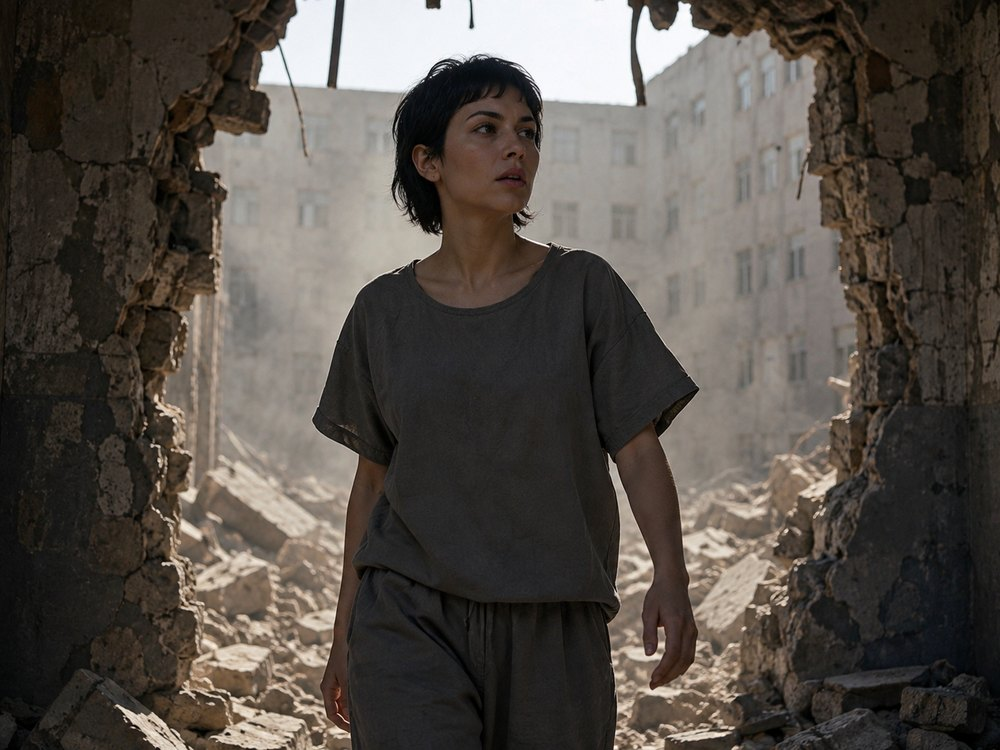
Дом без имени
Амели родилась 13 октября 2001 года в бедной сельскохозяйственной провинции Румынии. Её семья жила крестьянским трудом, вдали от крупных городов.
Способность проявилась рано: предметы, растения и животные начинали разрушаться после её прикосновения. Родные старались скрывать происходящее, однако слухи распространялись вместе с чередой необъяснимых смертей и разрушений. Девочку воспринимали одновременно как больную и проклятую. Травля приводила её в ярость, вызывая вспышки гнева.
Позднее Амели полностью вычеркнула этот период из собственной биографии. Подлинное имя, семью и место рождения она скрывает особенно тщательно.
Способность проявилась рано: предметы, растения и животные начинали разрушаться после её прикосновения. Родные старались скрывать происходящее, однако слухи распространялись вместе с чередой необъяснимых смертей и разрушений. Девочку воспринимали одновременно как больную и проклятую. Травля приводила её в ярость, вызывая вспышки гнева.
Позднее Амели полностью вычеркнула этот период из собственной биографии. Подлинное имя, семью и место рождения она скрывает особенно тщательно.
Пациентка 2247
После нескольких смертельных инцидентов с окружающими Амели признали невменяемой и поместили в психиатрическую лечебницу. Её существование сводилось к осмотрам, ограничениям и наблюдению.
Изоляция не научила её контролировать силу, а препараты только подавили её. Эта жизнь закрепила отвращение к прикосновениям и чужому шуму. Чистота, строгий распорядок и одинаково расположенные предметы постепенно стали для неё единственным способом сохранять спокойствие.
Изоляция не научила её контролировать силу, а препараты только подавили её. Эта жизнь закрепила отвращение к прикосновениям и чужому шуму. Чистота, строгий распорядок и одинаково расположенные предметы постепенно стали для неё единственным способом сохранять спокойствие.
Открытые двери
Во время глобальных катаклизмов после «Дня стеклянных стен» системы лечебницы отказали, а часть комплекса была разрушена. Амели покинула учреждение и впервые оказалась в мире, где прежние законы, надзор и государственные структуры стремительно исчезали.
Свобода не сделала её беспомощной. В разрушенных городах её сила оказалась эффективнее любых запасов и оружия: двери, стены, техника и люди переставали быть препятствиями.
Вскоре она встретила Дариана Сореля, Валентину Блажек и Эмиля Гранта, сбежавших из лаборатории Вистнера. Союз четырёх беглых мета-людей позднее превратился в Квартет — ядро будущих Ракшасов.
Свобода не сделала её беспомощной. В разрушенных городах её сила оказалась эффективнее любых запасов и оружия: двери, стены, техника и люди переставали быть препятствиями.
Вскоре она встретила Дариана Сореля, Валентину Блажек и Эмиля Гранта, сбежавших из лаборатории Вистнера. Союз четырёх беглых мета-людей позднее превратился в Квартет — ядро будущих Ракшасов.
Амели Бертран
Имя «Амели Бертран» появилось уже после освобождения. Оно не принадлежало её семье и не было связано с прошлым: звучный французский псевдоним она выбрала как основу новой личности.
Деревенскую девчонку сменила утончённая женщина с выверенной речью, винтажными костюмами, перчатками и подчёркнуто холодными манерами. Этот образ собирался сознательно и поддерживается до сих пор с болезненной тщательностью.
Любая трещина в нём вызывает ярость. В моменты паники у Амели прорываются грубые выражения и интонации прошлого, после чего она особенно жестоко расправляется со свидетелями. Новая личность стала для неё защитной оболочкой, которую приходится непрерывно подтверждать.
Деревенскую девчонку сменила утончённая женщина с выверенной речью, винтажными костюмами, перчатками и подчёркнуто холодными манерами. Этот образ собирался сознательно и поддерживается до сих пор с болезненной тщательностью.
Любая трещина в нём вызывает ярость. В моменты паники у Амели прорываются грубые выражения и интонации прошлого, после чего она особенно жестоко расправляется со свидетелями. Новая личность стала для неё защитной оболочкой, которую приходится непрерывно подтверждать.
Хозяйка Бастиона
К 2061 году Амели правит доменом «Прах» из Бастиона. Она редко покидает крепость и не стремится к публичному лидерству, однако контролирует важнейшее убежище Квартета, его запасы и внутреннюю инфраструктуру.
Строительство Бастиона не имеет конечного проекта. Каждый завершённый ярус обнаруживает новую предполагаемую уязвимость, поэтому Амели требует укреплять стены, углублять шахты и создавать дополнительные автономные контуры.
Её влияние строится на зависимости. У каждого члена Квартета есть личный эвакуационный бункер, но все они находятся внутри владений Амели. В случае катастрофы именно она решит, какие двери откроются.
Строительство Бастиона не имеет конечного проекта. Каждый завершённый ярус обнаруживает новую предполагаемую уязвимость, поэтому Амели требует укреплять стены, углублять шахты и создавать дополнительные автономные контуры.
Её влияние строится на зависимости. У каждого члена Квартета есть личный эвакуационный бункер, но все они находятся внутри владений Амели. В случае катастрофы именно она решит, какие двери откроются.

Ритуалы порядка
Амели часами выравнивает предметы, проверяет расстояния между ними и требует немедленно исправлять любые нарушения симметрии. Косая плитка, неправильная нумерация или треснувшая чашка способны вызвать у неё более бурную реакцию, чем сообщение о массовой гибели людей на работах.
Основным средством успокоения служат травяные сигареты. Под их действием Амели становится медлительной, задумчивой и склонной произносить многозначительные рассуждения; после окончания эффекта — раздражительной и придирчивой.
Она не любит прикосновений, громких голосов и любых неожиданностей. Чай должен подаваться строго определённой температуры, одежда — не иметь ни одной складки, а прислуга — двигаться бесшумно. Исполнение этих требований не гарантирует безопасности, но нарушение почти всегда замечается.
Основным средством успокоения служат травяные сигареты. Под их действием Амели становится медлительной, задумчивой и склонной произносить многозначительные рассуждения; после окончания эффекта — раздражительной и придирчивой.
Она не любит прикосновений, громких голосов и любых неожиданностей. Чай должен подаваться строго определённой температуры, одежда — не иметь ни одной складки, а прислуга — двигаться бесшумно. Исполнение этих требований не гарантирует безопасности, но нарушение почти всегда замечается.

НЕДОСТРОЕННЫЕ ГЛУБИНЫ
Строительство Бастиона не имеет конечного проекта. Каждый завершённый ярус обнаруживает новую предполагаемую уязвимость, поэтому Амели требует укреплять стены, углублять шахты и создавать дополнительные автономные контуры.
Она ожидает нападения сразу со всех направлений. Forge, по её убеждению, готовит средство проникновения сквозь горную породу; Единая Америка способна нанести удар неизвестным оружием; Тенебрия однажды вернётся за Квартетом лично. К этому списку регулярно добавляются новые мета-люди и угрозы, существование которых никто, кроме Амели, не считает доказанным.
Каждый новый уровень должен стать последним убежищем, недоступным для очередного врага. Однако ещё до завершения работ Амели приходит к выводу, что глубины недостаточно. Проект пересматривают, проходческие машины опускают ниже, а Бастион продолжает зарываться в горный массив.
Полной схемы будущих ярусов не существует. Есть только текущее направление строительства — вниз.
Она ожидает нападения сразу со всех направлений. Forge, по её убеждению, готовит средство проникновения сквозь горную породу; Единая Америка способна нанести удар неизвестным оружием; Тенебрия однажды вернётся за Квартетом лично. К этому списку регулярно добавляются новые мета-люди и угрозы, существование которых никто, кроме Амели, не считает доказанным.
Каждый новый уровень должен стать последним убежищем, недоступным для очередного врага. Однако ещё до завершения работ Амели приходит к выводу, что глубины недостаточно. Проект пересматривают, проходческие машины опускают ниже, а Бастион продолжает зарываться в горный массив.
Полной схемы будущих ярусов не существует. Есть только текущее направление строительства — вниз.
— конец зафиксированного участка —